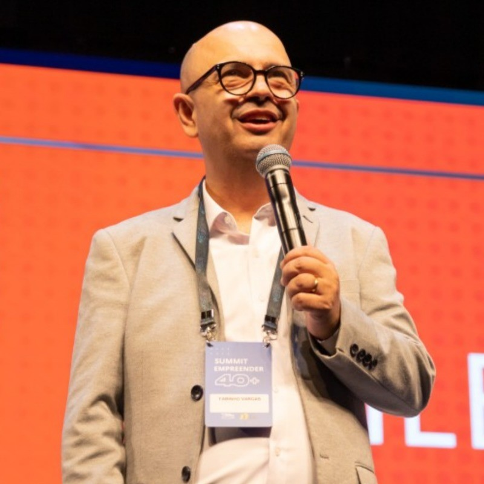

Networking qualificado
Relacionamentos com empreendedores e decisores em fase de consolidação e expansão de negócios, com foco em parceria real.
Um espaço exclusivo para quem quer transformar bagagem em movimento: encontros com networking qualificado, inspiração prática e oportunidades reais de negócio para o público 40+.
A Confraria do Empreender 40+ foi criada para fortalecer uma comunidade de pessoas que valorizam trajetória, repertório e relações de longo prazo.
Relacionamentos com empreendedores e decisores em fase de consolidação e expansão de negócios, com foco em parceria real.
Conversas e histórias de quem empreende com maturidade, trazendo repertório, estratégia e clareza para os próximos passos.
Ambientes pensados para gerar conexões comerciais, cocriação de projetos e novos ciclos de crescimento para o público 40+.
Uma experiência desenhada para gerar resultado real antes, durante e depois do encontro presencial.
Você entra no clima com conteúdo orientado à ação e conexões iniciais com empreendedores alinhados ao seu momento.
Palco, bastidores e interações qualificadas para transformar repertório em decisão e gerar oportunidades concretas.
A relação não termina no evento: a Confraria mantém o ecossistema ativo para consolidar parcerias e novas frentes.
Mais do que um evento, o Empreender 40+ é um movimento para transformar experiência em impacto econômico e social.
O Empreender 40+ nasceu para reconhecer e potencializar a força de quem construiu repertório ao longo da vida e agora quer empreender com mais estratégia, conexão e clareza.
A proposta é criar um ecossistema onde maturidade vira diferencial competitivo: com trocas reais, conteúdo aplicável e oportunidades que respeitam o tempo e a bagagem de cada empreendedor.
Na Confraria, cada encontro foi pensado para gerar relações duradouras, novos negócios e protagonismo para o público 40+ no presente e no futuro.
Lideranças que unem visão, experiência e execução para fortalecer o empreendedorismo 40+.

Fundador e palestrante
Idealizador do movimento e articulador da comunidade, com foco em conexões de alto valor e construção de oportunidades para empreendedores maduros.
Estratégia e conteúdo
Responsável por fortalecer a visão estratégica do projeto, contribuindo para que cada iniciativa gere impacto real para o ecossistema 40+.
Criatividade e expansão
Atua na estruturação e expansão do movimento, conectando pessoas, ideias e ações para consolidar o Empreender 40+ como referência.
O QR Code serve somente para entrar no grupo oficial da Confraria no WhatsApp.
Entre no grupo oficial da Confraria para ficar por dentro dos encontros, agendas especiais, conteúdos e oportunidades de colaboração.
Novos vídeos publicados no canal aparecem automaticamente aqui para você assistir direto da Confraria.
Carregando os vídeos mais recentes...